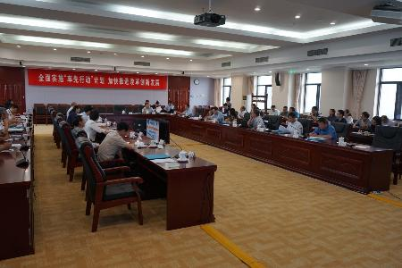
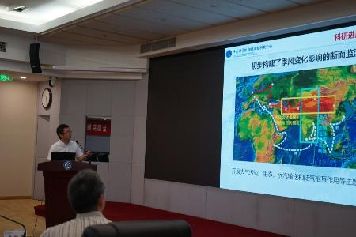
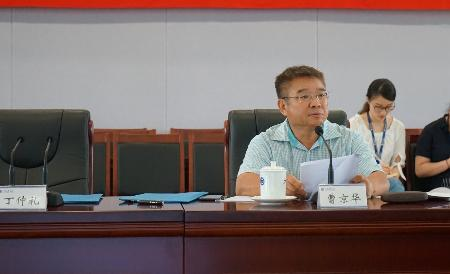
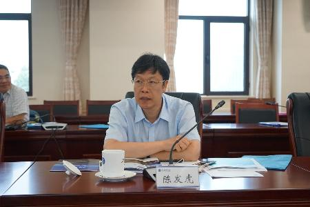

2018年7月9日，在院机关召开了中国科学院加德满都科教中心（以下简称“加德满都中心”）第二届理事会第一次会议。会议由国际合作局曹京华局长主持，理事会成员、依托和共建单位的专家学者及管理人员约30人参加了会议。
曹京华局长首先代表国际合作局宣读了第二届理事会的成员名单，随后理事会选举丁仲礼副院长为加德满都中心理事长，曹京华和陈发虎院士为副理事长。会议讨论通过姚檀栋院士连任中心主任。受姚檀栋院士的委托，中心执行主任汪涛研究员从科研、教育和服务民生等方面全面汇报了中心成立以来所取得的成绩，提出了今后三年的发展目标；山地分中心执行主任吴艳宏研究员汇报了在尼泊尔山地灾害等相关领域的工作成果和发展规划；赵平研究员报告了在园区和基础设施建设方面所取得的阶段性进展；康志焕处长介绍了相关的财务管理制度以及2014-2017年度、2018年上半年的经费使用情况；汪涛研究员介绍了2019年度预算编制依据并提请理事会予以审议。
会议充分肯定了近四年来加德满都中心在科学研究、人才培养、野外观测基地和园区建设等方面所取得的成绩，一致认为加德满都中心在第二次青藏高原综合科学考察研究、TPE国际计划和NSFC-ICIMOD国际合作项目等方面发挥了重要的科技支撑作用。与会专家对加德满都中心的发展规划提出了一些建设性的意见与建议。曹京华局长特别强调，成立加德满都中心山地分中心是为了发挥山地所在山地灾害和山区发展等方面的学科优势，将进一步提升中心在服务民生方面的能力。陈发虎院士表示，作为依托单位青藏高原所将一如既往地大力支持中心的建设，适时配置专职科研人员以促进中心科研工作的稳步发展，希望加德满都中心在新一届理事会的领导下能够更好地发挥海外平台作用，各项工作迈上新台阶。

会议现场

加德满都中心执行主任汪涛汇报加德满都中心建设概况


副理事长曹京华和陈发虎发言